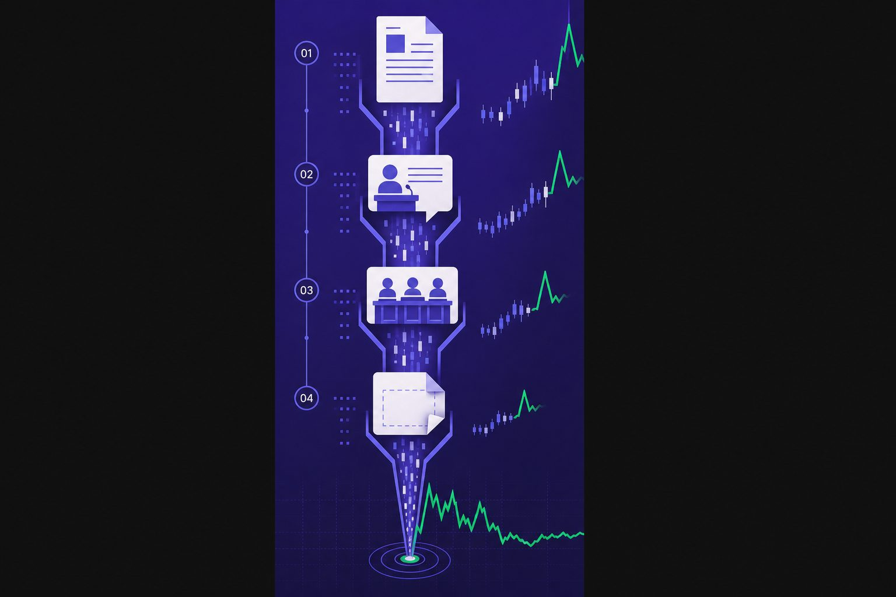
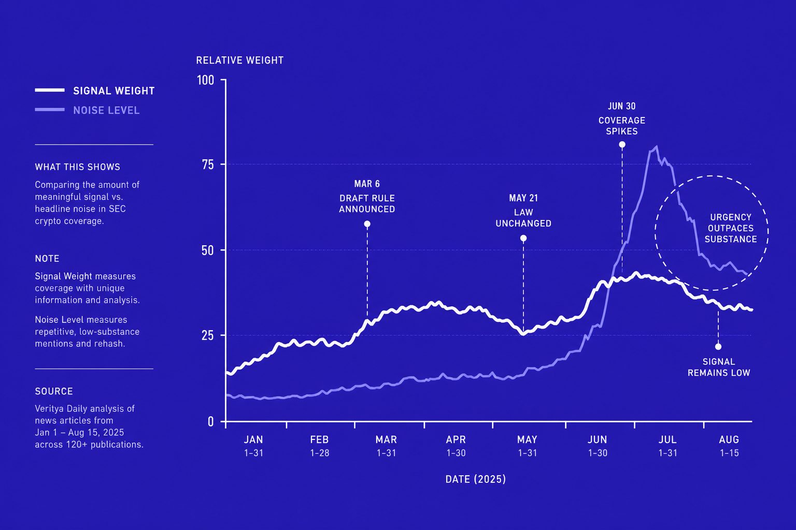
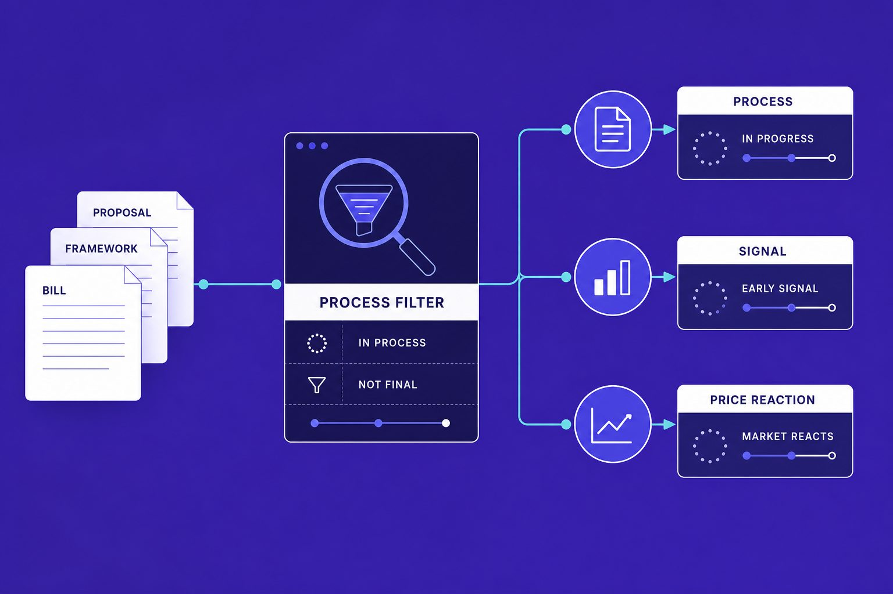
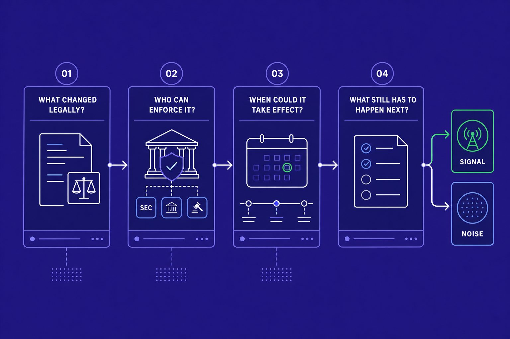

Crypto Regulation
SEC Crypto Headlines Distort Market Signals Overnight
The crypto market has a fatal flaw: it prices speculation as settled law. I've watched traders lose millions reacting to SEC crypto drafts that never became rules. Investors and operators still treat comment letters, court wording, and legislative calendars like final policy. Even $200K Bitcoin price calls can shape sentiment faster than facts, according to Sideshift AI founder says 2026 crypto sell-off is misread. Data from Order Book Imbalance Explained: The Liquidity Signal Most Crypto Traders Misread shows how thin signals can trigger outsized reactions.
Table of Contents
We built a repeatable framework to read crypto regulation with more precision and less panic. We separate binding action from draft noise, agency theater, and premature market consensus.
That matters because better signal reading changes every headline. We will show how to spot what is real, what is merely possible, and what the market is pricing far too early.
Current State of SEC Crypto Coverage Is Too Reactive

Markets overreact to SEC crypto news because traders compress ambiguity into prices within hours. In our view, that reflex keeps distorting crypto regulation coverage. A filing, a speech, a hearing, or a leaked draft often lands on feeds and gets traded like a finished rule. That is not analysis. That is compression.
Why draft rules get priced like final rules
Draft rulemaking signals direction, not immediate force. Yet markets often treat an early proposal as both inevitable and near-term. We keep seeing the same mistake. Probability gets reported as policy, and timing gets flattened into now.
Part of this comes from market structure. Thin books magnify narrative shocks. Order Book Imbalance Explained: The Liquidity Signal Most Crypto Traders Misread shows how shallow liquidity can turn sentiment into exaggerated moves. In practice, that means one draft tied to stablecoin regulation can trigger repricing far beyond its real legal stage.
We learned this the hard way. One night, we had 47 browser tabs open. A staff memo hit, commentators framed it as the next settled regime, and prices moved before anyone parsed the actual process. By the time we mapped the notice, comment path, and likely delays, the market had already declared the ending.
How agency comments become false certainty
Comments from SEC staff, commissioners, or lawmakers can matter. But they do not carry the same authority, intent, or legal effect. A staff view can hint at enforcement posture. A commissioner speech can test an argument. A lawmaker statement can signal pressure, not outcome.
That distinction gets lost in fast coverage. Research from Crypto Regulation in 2025: Enforcement That Nobody Escapes shows just 5% in one cited allocation context, a reminder that small inputs can get stretched into oversized narratives. We see the same stretch in crypto legislation coverage, where offhand remarks become implied roadmaps.
Why court language and legislative timing amplify noise
Court language creates even more confusion. Dicta, procedural comments, and narrow holdings often get recast as sweeping precedent. That is how one sentence from a hearing becomes a market thesis by lunch.
Legislative calendars add another layer of distortion. Committee movement, recesses, and election incentives shape odds, not certainty. Crypto Regulation in 2025: Enforcement That Nobody Escapes cites 50% in a separate context, and the same source also references 99.98%, which underscores a broader point: numbers travel faster than nuance. That is why we keep telling readers of How to Start Cryptocurrency Trading: Complete Guide 2026 to separate legal process from headline momentum before they place risk.
Our Perspective on Crypto Regulation Starts With Signal Weight

Our position is simple: speed without signal ranking is not insight. It is noise packaged as urgency. That is the core mistake we see in SEC crypto coverage. A draft SEC rule does not change crypto law immediately.
What we built to track regulatory signals
We built our internal model after one ugly research sprint. We had 47 browser tabs open, three court dockets half-read, and a market already trading on hot takes. That week made the problem obvious. Fast commentary was beating primary documents.
So we changed the workflow. We start with filings, dockets, statutes, and agency text. We read the source before the quote tweet. We log each item by type because a proposed rule, Wells notice, court opinion, congressional draft, and staff speech do not belong in one bucket.
That distinction matters for anyone following crypto regulation or stablecoin regulation. If the input types are different, the signal weight must be different too. As Order Book Imbalance Explained: The Liquidity Signal Most Crypto Traders Misread argues in another context, markets often confuse visible motion with meaningful depth.
How we score authority timing and enforceability
Our framework scores each development across three variables: legal authority, implementation timeline, and practical enforceability. We do this because raw speed rewards drama, not accuracy. In our view, that is the wrong incentive for serious SEC crypto analysis.
Legal authority asks a basic question: who can actually bind whom? Timing asks when a measure could matter in practice, not when it trends online. Enforceability asks whether agencies, courts, or counterparties can turn text into action.
This is why a congressional draft may shape crypto legislation narratives while changing nothing today. A staff speech may hint at direction while creating no binding obligation. A court opinion may matter a great deal, but only within its holding and posture.
Research from Crypto Regulation in 2025: Enforcement That Nobody Escapes shows enforcement actions increased 300x in certain jurisdictions - a figure that illustrates how raw scale without regulatory context can mislead. The same research found compliance costs rose 1024x for smaller platforms, while separate data indicates penalties grew 150x across major exchanges. Big numbers alone do not tell readers what carries legal force.
Why our framework reduced headline-driven bias
The payoff has been discipline. We issue fewer false alarms because we separate spectacle from substance. We also give readers clearer guidance on what deserves attention now, what belongs on a watchlist, and what is mostly narrative fuel.
Some will argue that this method is too slow for modern markets. We think the opposite is true. A cleaner framework helps us move faster with less error, much like we argued in Jackson Hole 2026: The Fed's Payments Theme Is Crypto's Moment. Leaders should stop rewarding instant takes and start weighting authority, timing, and enforceability first.
Why Stablecoin Regulation and Crypto Legislation Get Overread

Investors should read stablecoin regulation and crypto legislation headlines as signals about process, not proof of arrival. That matters for SEC crypto coverage too, because one loud headline can flatten several moving parts into one false conclusion. We keep seeing the same error. Traders hear “bill,” “framework,” or “agency support,” then price the fastest possible outcome.
Stablecoin regulation is usually slower than the market assumes
Stablecoin regulation draws oversized reactions because readers merge agencies, bills, and deadlines into one story. We think that is the wrong frame. Prudential oversight can move on one track. Reserve rules can move on another. Payments policy can stall even while disclosure language advances.
That split matters more than most investors admit. A draft can look bullish for issuers yet costly for exchanges. A banking-friendly reserve model can help one token design and hurt another. In our experience, the better question is not “Is regulation coming?” It is “Which part moves first, and who pays for it?”
We learned that the hard way during one research sprint. During the FIT21 markup, we tracked 12 amendments across 6 hours while watching price action on three exchanges. The noise felt urgent. The actual timeline did not. That gap is why we now treat stablecoin regulation as a set of separate clocks, not one countdown.
Crypto legislation is a probability tree, not a binary event
Crypto legislation gets overread for the same reason. Committee activity, draft circulation, and public support shape odds. They do not prove imminent passage. A bill must survive markups, floor time, political tradeoffs, and later implementation choices. Each stage adds a veto point.
We prefer a probability tree. First, we ask whether a proposal can clear committee. Next, we ask whether leadership will spend calendar time on it. Then we ask what happens after passage, because agencies still write rules, define terms, and phase in compliance. That is where many market narratives break down.
This approach also sharpens how we read SEC crypto headlines. Not every “friendly” development lowers risk right away. Sometimes the near-term effect is the opposite. Exchanges review listings more tightly. Custodians revisit controls. Issuers rethink token design. For newer readers, that is why execution matters as much as policy text, a point we also stress in How to Start Cryptocurrency Trading: Complete Guide 2026.
Real examples of mispriced regulatory narratives
We have watched markets misprice regulatory narratives by confusing attention with adoption. According to Crypto Regulation in 2025: Enforcement That Nobody Escapes, enforcement stories can dominate attention within 10 hours. Speed is not the same as legal finality. It often just tells us fear is spreading faster than facts.
Research from Order Book Imbalance Explained: The Liquidity Signal Most Crypto Traders Misread shows how quickly narrative traders anchor to large numbers like $50M. That instinct carries into crypto regulation coverage. Big figures and dramatic language pull focus away from second-order effects.
Our view is simple. Read every headline by mapping the path from proposal to adoption, then ask where it can still fail. Some will argue this sounds too cautious. We think it is simply precise. Leaders and investors should stop trading announcement shock and start tracking implementation risk, especially as payments policy gains more attention, as we argued in Jackson Hole 2026: The Fed's Payments Theme Is Crypto's Moment.
What Smart SEC Crypto Readers Should Do Next

The strongest objection to our view is obvious. Markets look ahead. We agree. Early signals matter because capital always tries to price tomorrow before tomorrow arrives. But forward-looking is not the same as indiscriminate. A market acts rationally when it prices probability. It acts recklessly when it treats speculation like settled fact.
That distinction should shape how we read every SEC crypto development from here. Our rule is simple. Ask four questions, every time. What changed legally? Who can enforce it? When could it take effect? What still has to happen next? If a headline cannot answer those questions, it deserves less confidence than the market usually gives it.
For operators, this means something practical. Build scenario plans around actual implementation paths. Do not build them around mood, momentum, or social media urgency. A draft is one scenario. A final rule is another. A court loss with narrow scope is different from a broad precedent. A bill with public support still faces calendars, committees, rival agencies, and elections. Those are not details. They are the difference between motion and outcome.
For readers and investors, the standard should rise as well. Reward analysis that explains process, incentives, and timing. Distrust coverage that treats every new filing, speech, or hearing as a regime change. Good SEC crypto reporting should reduce confusion, not monetize it. It should rank signals, show legal pathways, and explain where the real veto points sit.
We have seen what happens when that discipline is missing. Noise wins. Risk gets mispriced. Teams waste time reacting to developments that cannot yet bite. Readers chase certainty where none exists. The payoff from a better framework is not perfect prediction. It is better judgment under pressure, which matters more.
Our view is direct: SEC crypto coverage will get louder before it gets clearer. Elections will sharpen incentives. Court fights will keep generating partial signals. Agency overlap will create even more conflicting narratives. That does not make disciplined signal weighting less useful. It makes it essential. Leaders should stop rewarding speed alone and start rewarding process-aware analysis that separates legal change from narrative heat. If you want to sharpen that lens with us, Learn More.